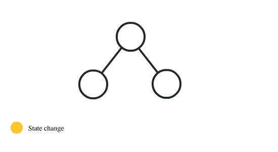
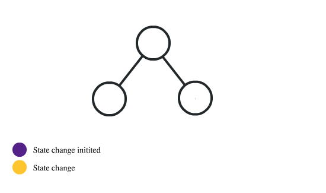
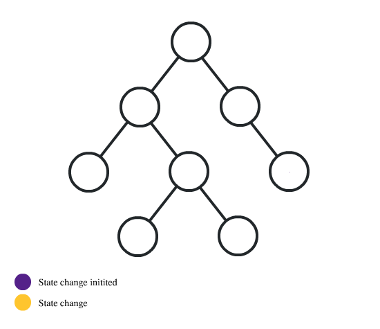

Redux is a tool for managing application state and is a very common tool used in React applications.
State is a collection of application data, like the current logged in user’s name.
The state for an application might change based on things such as user actions or a response from an API.
An application will read the state to determine what sort of User Interface it should show.
React does have local component state but as a React application grows and becomes more complex, like when functions
that change application state are scattered through several React components, it may be a good idea to start to use Redux.
React has ‘unidirectional data flow’ which means components send state downwards as props.

As a React application grows more complex, some components may need to share state but they don't share a parent-child relationship.
To get around this issue, you can use a technique called 'Lifting state' which means the state (and functions that change this state) are
lifted to the closet ancestor (Container Component). The child component can trigger state changes in their parent components, which will update all other components in the tree.

However, as the application starts to get more complex, the the way state is being updated and dispersed across our application is may become more complex
and the application state flow may start looking like the below:

When developing your application it may be worth considering Redux if:
Redux allows you to maintain the application state as a single global store, rather than in local component state. Not all React applications need to use Redux and simple React applications won't benefit from it at all.
Redux has the following structure:
a platform built on Chrome's JavaScript runtime called V8.
Its greatest advantage over other JS engines is the compiling of JS code to native machine code before executing it.
Node.js uses a single threaded event loop. It takes all requests and then delegates most of the work to other system workers.
There's something called a Libuv library which handles this work effectively with help from the OS kernel.
When the background workers are done doing their work, they emit events to NodeJs callbacks registered on that event.
For example, if Node.js has to read a file saved on the serbver, while the file system is reading the file,
Node.js uses the idle time to handle other requests. When the file system is done, it tells Node to come and take the resource and send it to the browser.
Node.js makes use of callbacks which are basically functions passed into other functions as arguments and are called when certain conditions occur.
Even though NodeJS is a single threaded system, it is usually faster than multi-threaded systems.
However NodeJS doesn't excel at operations that consume CPU. CPU intensive operations overload the main thread, which is the only thread in Node.js.
Node.js is suited more for I/O tasks, like a web server.
Connect is a module that delivers a set of wrappers around the Node.js low-level APIs. The Connect module uses a modular component called middleware which allows you to simply register your application logic to predefined HTTP requests. Connect middleware are basically a bunch of callback functions, which get executed when a HTTP request occurs. The middleware can then perform some logic, return a response, or call the next registered middleware. Express is a web framework that uses Connect's middleware architecture.
Routing means assigning functions to respond to users requests.
Routing in Express follows this basic format:
app.VERB(‘path’, callback…);
Where VERB is any of the get, post, put, delete verbs.